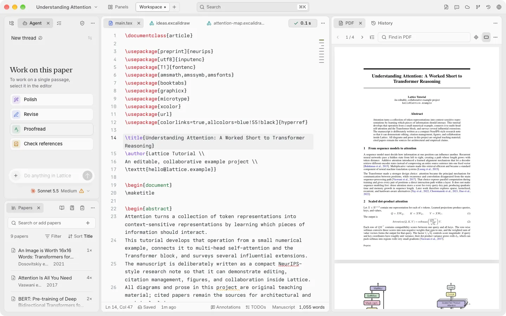

The Agent
The Agent panel runs a coding agent that reads your project and papers, fixes build errors and edits files. Every change it makes shows as a diff you can review or undo, and lands in History. Lattice includes no model or AI subscription of its own: you bring one.
Connect an agent
Open the Agent panel (⌘⌥3, or the robot icon on the left). Then use one of:
- Claude Code or Codex on your Mac, signed in as you. Install the CLI, sign in once in Terminal (for example
claude auth login), and pick it in the model menu under the message box. - Another agent CLI you have installed, such as Cursor, OpenCode or Droid.
- Your own API: Settings › Agent › Model endpoint takes an OpenAI- or Anthropic-compatible address, a key (kept in your Keychain) and model names. Nothing else to install.
Settings › Agent › Providers sets the default provider and the models Lattice uses for its own small tasks (proofreading, commit messages, compile repair). MCP adds tools such as Zotero to the Agent; Usage & limits shows what you have used.
Work with it

- Type what you want in the message box and press Return. Mention a file to point it there.
- Polish, Revise, Proofread and Check references start common tasks. To work on one passage, select it in the editor first.
- In the editor, select text to Proofread (
⌘⌥P), Polish or Rewrite… it in place, with a reason for each edit. - Annotate a passage (select it, choose Annotate, write what should change), then Save and revise now: the Agent proposes an edit for each annotation and you accept or reject it in place. Revise from annotations in the command palette does every open annotation in rounds.
- A failed build's Ask the agent sends that problem straight here.
Threads are kept per project; the clock next to the thread name lists earlier ones.